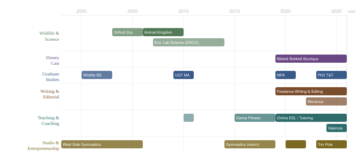

Niki Patino
These are six versions of the same résumé.
Niki Patino is a PhD candidate, an English professor, a former zookeeper, a studio owner, a writing coach, and a copy editor. She has written a memoir, trained primates, ghostwritten sixty-thousand-word manuscripts, and opened an aerial arts studio during a pandemic. The same person did all of these things.
Each page below is addressed to a different reader. Nothing has been invented for any of them. The tension between them is left intact.
